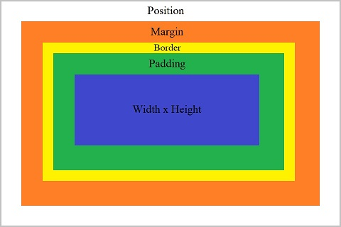

CSS
Introduction
In website design, CSS is a highly important building block of a webpage, as CSS acts as the presentational "style" layer of a webpage. CSS is used as a way to address elements for uniform or unique styling choices in a webpage, and can even allow for certain forms of interactability, without the use of heavier-handed solutions such as using JavaScript. Due to the fact that CSS is typically "linked" from the HTML head of the page it will be used to style, CSS is also highly reusable, as various pages of a website can all link back to a single, unified CSS file for styling. CSS additionally offers methods of responsive presentation, by allowing for elements of the page to be styled based on the width and height of the current viewport. If you are looking for how to link a CSS file from HTML, go to the "Linking" subsection of the "Head Elements & Attributes" section on the "HTML" page, or click the button below and scroll down to the section:
Head Elements & AttributesSelectors
Intro
In CSS, HTML elements are targetted by the use of "selectors".
For instance, selecting a <header> element is as simple as using the following selector:
header {}
This will then select every <header> element on the page.
Any Descendent
If you only want to select something that is a descendent of a certain element, you can put the descentent after the ancestor element, for instance, to select any <nav> element in a <header> element, you could use:
header nav {}
Direct Child
To select only direct child elements of a parent element, such as only selecting <p> elements that are direct children of <section> elements, you can use the following form:
section > p {}
Class
To select elements by their class, you can use the "." operator.
If the "." operator is used on its own, it will target the elements of that class, but if the "." is attacted to the name of an element, it will only select that type of element with that class. For example, to select any element with a class of "color-this-red", you could use the following:
.color-this-red {}
If instead you would like to target only <p> elements with the "color-this-red" class, you could use the following:
p.color-this-red {}
Identifier
To select elements by their id, you can use the "#" operator.
For instance, if you want to select the element with the id of "intro-section", you could use the following:
Multiple Selectors
#intro-section {}
You can chain multiple selectors to affect the same properties of the elements they select by comma-separating the selectors, like so:
section > p, p.color-this-red, header nav {}
Properties & Box Model
The Box Model

An example of the CSS box model.
When using CSS, it is of great importance to understand the idea of the "box model", the idea that any given element can be reduced to a box with a position, a margin, a border, padding, and a pair of width and height.
Each of the different properties of the box model can be adjusted in various ways.
The margin, padding, width, and height can be set relatively simply, and in the case of margin and padding, the different sides can be set individually or all at once.
An example of setting the margin, padding, width, and height of a <header> element is as follows:
header {
margin-left: 5px;
margin-top: 1em;
padding: 0.25em 1em 0 0.75em;
width: 240px;
height: 3em;
}
The border property can be adjusted to give a border to elements, for instance, the following code will cause an element to have a 2px, dashed, black border:
#black-border { border: 2px dashed #000; }
This is what such an element would look like:
This element has a black border!
Text Properties
Text can be modified using properties such as color, text-decoration, text-shadow, etc.
Example code for the previous properties are shown below:
#blue-text { color: #00f; }
#underline-text { text-decoration: underline; }
#green-shadowy-text { text-shadow: 2px 2px 2px #0f0; }
Example elements of the previous code snippets are below:
This text is blue!
This text is underlined!
This text has a green shadow!
CSS Flexbox
Justify Content
Oftentimes in website design, it would be visually appealing to have elements be placed around in a flexible, responsive manner.
CSS Flexbox offers a nice way to do this via the use of the display: flex; property, then adjusting other flex-related properties.
For an example, to justify multiple elements along the row of their container, you can use flex-direction: row; paired with the justify-content property, such as in the following code snippets and examples:
#flex-justify-flex-end { display: flex; flex-direction: row; justify-content: flex-start; border: 1px solid #ccc; }
Element 1
Element 2
Element 3
#flex-justify-flex-end { display: flex; flex-direction: row; justify-content: center; border: 1px solid #ccc; }
Element 1
Element 2
Element 3
#flex-justify-flex-end { display: flex; flex-direction: row; justify-content: flex-end; border: 1px solid #ccc; }
Element 1
Element 2
Element 3
#flex-justify-flex-end { display: flex; flex-direction: row; justify-content: space-between; border: 1px solid #ccc; }
Element 1
Element 2
Element 3
#flex-justify-flex-end { display: flex; flex-direction: row; justify-content: space-around; border: 1px solid #ccc; }
Element 1
Element 2
Element 3
#flex-justify-flex-end { display: flex; flex-direction: row; justify-content: space-evenly; border: 1px solid #ccc; }
Element 1
Element 2
Element 3
External Resources
For an additional helpful resource for learning CSS Flexbox, take a look at Flexbox Froggy. Flexbox Froggy serves as an interactive, gamified, practical tutorial for how to use CSS Flexbox. Click the "Flexbox Froggy" button below to go to the webpage:
Flexbox FroggyCSS Grid
Grid Template
Oftentimes in website design, it would be visually appealing to have elements be placed around in a flexible, responsive manner, while simultaneously having those elements conform to a grid.
CSS Grid offers a nice way to do this via the use of the display: grid; property, then adjusting other grid-related properties.
For an example, to put three elements on a single column in a container, you can use grid-template: repeat(3, 1fr) / 1fr;, or you could do the same but on a single row using grid-template: 1fr / repeat(3, 1fr);, such as in the following code snippets and examples:
#grid-three-in-column { display: grid; grid-template: repeat(3, 1fr) / 1fr; border: 1px solid #ccc; }
Element 1
Element 2
Element 3
#grid-three-in-row { display: grid; grid-template: 1fr / repeat(3, 1fr); border: 1px solid #ccc; }
Element 1
Element 2
Element 3
External Resources
For an additional helpful resource for learning CSS Grid, take a look at CSS Grid Garden. CSS Grid Garden provides a gamified, fairly robust tutorial for how to use CSS Grid. Click the "CSS Grid Garden" button below to go to the webpage:
CSS Grid GardenMedia Queries
Intro
For responsive webpages, it would be very helpful to know the height, and especially the width, of the current viewport.
CSS offers a method of styling elements based on such viewport dimensions, using selectors known as "media queries".
For viewport-related media queries, the syntax always begins with @media screen and, followed by the specific query.
Min-Width
To style an element base on a minimum viewport size, such as "640px", you could use @media screen and (min-width: 640px) {}.
Examples of media queries where a <p> element is colored differently based on viewport widths are shown below, with an example element following:
#min-width-coloration { color: #f00; }
@media screen and (min-width: 40rem) { #min-width-coloration { color: #0f0; } }
@media screen and (min-width: 64rem) { #min-width-coloration { color: #00f; } }
This text changes color based on min-width!
Max-Width
To style an element base on a maximum viewport size, such as "640px", you could use @media screen and (max-width: 640px) {}.
Examples of media queries where a <p> element is colored differently based on viewport widths are shown below, with an example element following:
#max-width-coloration { color: #f00; }
@media screen and (max-width: 64rem) { #max-width-coloration { color: #0f0; } }
@media screen and (max-width: 40rem) { #max-width-coloration { color: #00f; } }
This text changes color based on max-width!